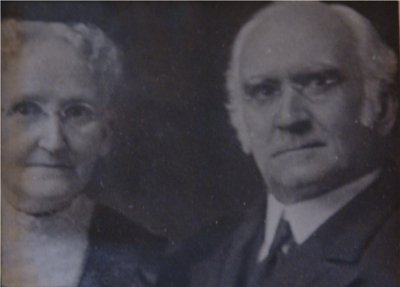
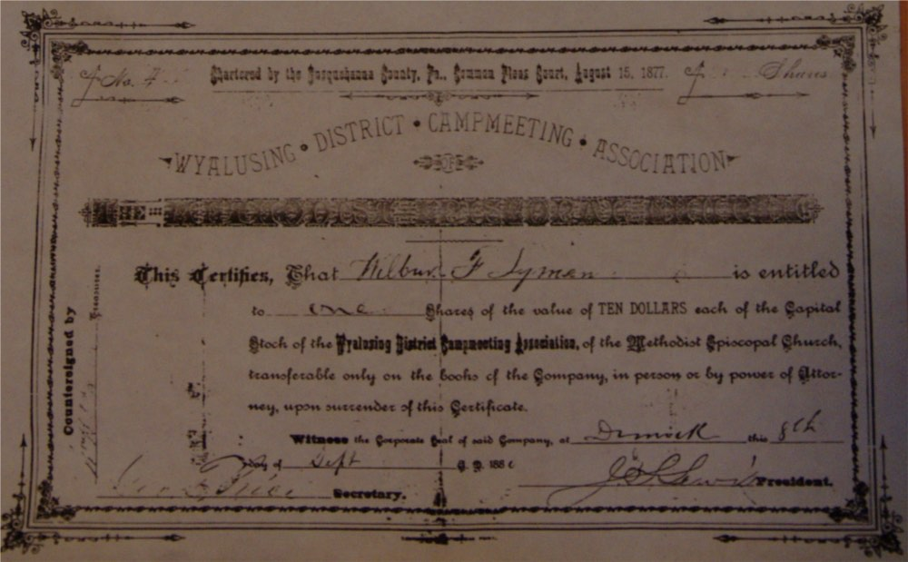
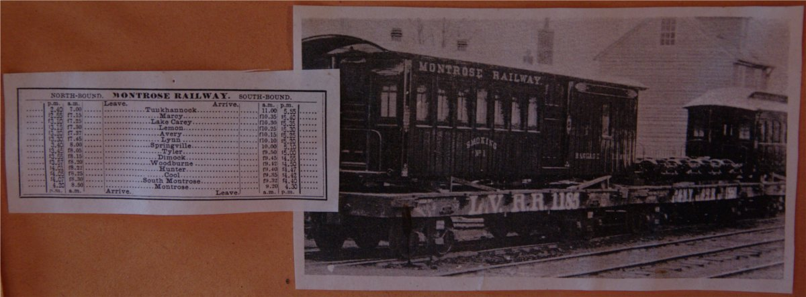

Since 1877
Dimock's History
Founding and Early Organization
Chartered on August 15, 1877, as the Wyalusing District Camp Meeting Association, the Dimock Camp Meeting Ground's inception was in September 1873. Congregations from the of the Wyoming Conference of the Methodist-Episcopal Church (now part of the Susquehanna Conference of the United Methodist Church) held a camp meeting near Meshoppen. This spurred the idea of a permanent site. Starting in October 1873, under Rev. Luther Peck's guidance, potential sites along the in-progress narrow-gauge railway from Tunkhannock to Montrose were explored. The 1874 summer camp meeting was again at Meshoppen due to the absence of a final decision.
By April 14, 1875, with as the District's presiding elder, Dimock was selected. Walker led an 11-member committee from the Wyalusing District, covering Wyoming County and parts of Bradford, Luzerne, and Susquehanna counties in Pennsylvania, to establish the Dimock Camp Meeting Ground. The committee members included: Rev. Jonathan K. Peck, Rev. W. L. Thorpe, Rev. J. H. Weston, Rev. S. Barner, Rev. H. G. Harned, E. L. Weeks, G. E. Palen, Wilbur F. Lyman, B. W. Van Auken, and J. Beardsley.

Establishment of the Grounds
On June 21, 1875, the committee, minus Jonathan Peck (who had to officiate a funeral), met in Dimock to outline tasks. These included leasing the grounds, constructing essential buildings, sourcing provisions and lumber, setting up water facilities, and organizing transportation and lighting.
July 9, 1875, marked a workbee day at Dimock on the 23.2-acre grounds leased from Col. Olney Bailey. The call was for "all gentleman friends of the Camp-meeting" to assist, especially those from the Wyalusing District: "Let all who cherish the vision of a beautiful grove come forth. From Bradford to Wyoming, from the hills to the valleys, from towns and countryside in our splendid Susquehanna – not just to prepare the Ground, but to ensure the Camp-Meeting's success."
Inaugural Meetings and Incorporation
The inaugural camp meeting-style preaching on the grounds took place on August 25, 1875. Reports indicated that 7,000 attendees graced the event that week. A local newspaper remarked it had never "witnessed such a large gathering" in Susquehanna County "as were present on that Sunday." The following year, 1876, local newspapers cited an even larger turnout of 10,000 attendees. Shortly before this camp meeting, an announcement declared funds had been allocated to purchase the grounds. To settle the debt, a decision was made to incorporate. A charter was subsequently lodged in the Susquehanna County Courthouse. By the 1877 camp meeting, individuals had the opportunity to invest in the venture by purchasing $10 shares of stock. While this granted them a voice at the annual board meetings, it did not offer financial dividends – the true dividends were, presumably, of a spiritual nature.

Transformation and Modernization
Attendees traveled in horse-drawn buggies or by train, opting to pitch tents or stay in boarding houses. Over time, tents transformed into about 100 cottages surrounding a central square, creating an open-air amphitheater with a preacher's stand and benches. It's hard to imagine accommodating 1,455 cars, 588 horses, and three motorcycles in 1918, but Dimock's annual events were undoubtedly grand outdoor spectacles.

By the summer of 2011, events no longer spanned 7-to-10 consecutive days. Instead, services in the Chapel (completed in 1940) were held across ten consecutive Sunday evenings. Attendees were invited to step back in time for a spirit-filled experience at Dimock. Beyond these services, the grounds also hosted Sunday School training, family and children's camps, and served as a retreat for pastors, lay leaders, and their families.